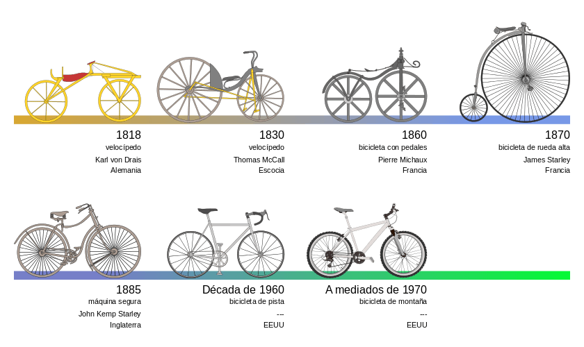
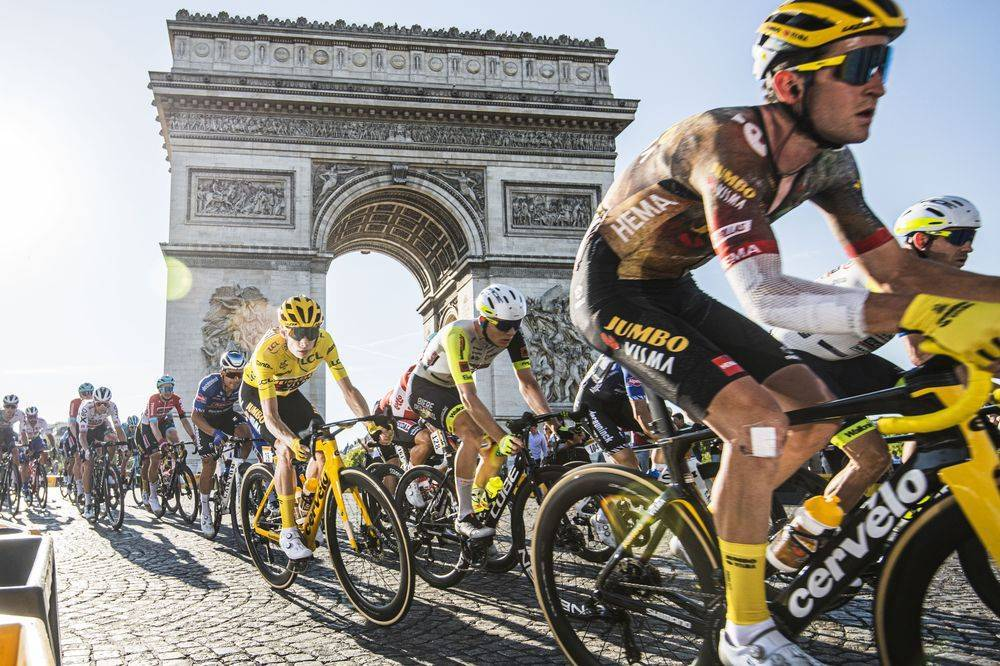
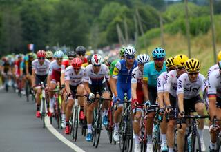
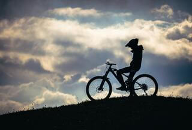
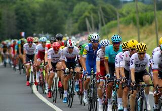
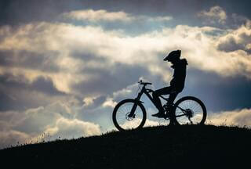

La bicicleta se ha convertido en uno de los medios de transporte de
dos ruedas más importantes y de alta gama a escala mundial. Se
caracteriza por ser personal, por ser ecológica y de
propulsión humana. Básicamente, se trata de un objeto que
cuenta con dos ruedas en línea que sostienen un cuadro hecho a base de
aluminio, dos pedales que ayudan al ciclista a emitir la fuerza de
propulsión, un manillar para controlar la dirección y un sillín para
sentarse y estar cómodos mientras conduces
Si bien es cierto que los nuevos avances tecnológicos han permitido la
creación de vehículos más sofisticados y que funcionan por medio del
uso de motores, las bicis, como popularmente se les ha llamado a las
bicicletas, aún conservan un sitio de honor entre las preferencias del
público. Y claro que cada vez son más las que podemos ver andar en las
calles de cualquier ciudad, sobre todo en Europa.

Evolucion de la bicicleta
Ciclismo Profesional
Categoria World Tour
El WorldTour (en los años 2009-2010
UCI World Ranking, no confundir con el UCI World Ranking
creado en 2016 como sustituto del Ranking UCI) es la denominación de
todas las carreras de máximo nivel de ciclismo en ruta masculino en
la que estas son agrupadas en un mismo calendario, tras el acuerdo
definitivo entre la Unión Ciclista Internacional y los organizadores
de las Vueltas
en enero del 2009; aunque durante los dos primeros años siguieron
diferenciándose con denominaciones diferentes.

Champs-Élysées - Francia
Como es el sustituto del UCI ProTour se suele confundir con ella,
aunque las distintas normas y el acuerdo entre la Unión Ciclista
Internacional y los organizadores de las Grandes Vueltas han hecho
que sea una competición diferente. Siendo esta en principio una
combinación del Ranking UCI (por ser una clasificación más abierta
que el ProTour aunque a partir del 2011 volvió a ser más cerrada) y
del UCI ProTour (por tener los equipos UCI ProTeam la participación
asegurada y obligada en algunas carreras y a partir del 2011 en
todas ellas).
Ciclistas mas reconocidos del mundo
lance Amstrong
Michigan-USA
Lance Edward Armstrong es un exciclista profesional estadounidense,
campeón del mundo de ciclismo en ruta en 1993
De cara a 1999, Armstrong se encontraba pletórico de moral y su
director le convenció de que era posible incluso llegar a una meta
más alta: vencer el Tour de Francia. Lance se
presentó en la salida como un favorito de segunda fila y al final
arrasó en la clasificación general por delante del suizo Alex Zülle,
si bien este se vio inmensamente perjudicado por una caída en la
segunda etapa donde perdió más de seis minutos
Marco Pantani
Veronna-Italia
Marco Pantani fue un ciclista profesional italiano, ganador del Giro
de Italia 1998 y el Tour de Francia del mismo año.
En la primavera de 1997, ya recuperado de la grave lesión, retornó a
la competición, pero durante el Giro sufrió una caída al cruzarse un
gato en su camino, que provocó su retirada de la carrera. En el Tour
de ese año protagonizó una intensa lucha por el
maillot amarillo ; aunque se mostró imbatible en la
montaña, Jan Ullrich, muy superior en las etapas contrarreloj, supo
limitar el tiempo perdido en los Alpes y Pirineos logrando la
victoria final y relegando a Pantani al tercer puesto.
Miguel Indurain
Navarra-España
Fue ganador del Tour de Francia durante cinco años consecutivos (de
1991 a 1995) -el único que lo ha conseguido de forma consecutiva- y
del Giro de Italia en dos ocasiones consecutivas (1992 y 1993)
En la primavera de 1997, ya recuperado de la grave lesión, retornó a
la competición, pero durante el Giro sufrió una caída al cruzarse un
gato en su camino, que provocó su retirada de la carrera. En el Tour
de ese año protagonizó una intensa lucha por el maillot amarillo;
aunque se mostró imbatible en la montaña, Jan Ullrich, muy superior
en las etapas contrarreloj, supo limitar el tiempo perdido en los
Alpes y Pirineos logrando la victoria final y relegando a Pantani al
tercer puesto.
Campeones Le Tour France
Veamos a continuación todo el palmarés del Tour de Francia a lo largo
de su historia, después de completar este 2020 su 20ª edición.
 


